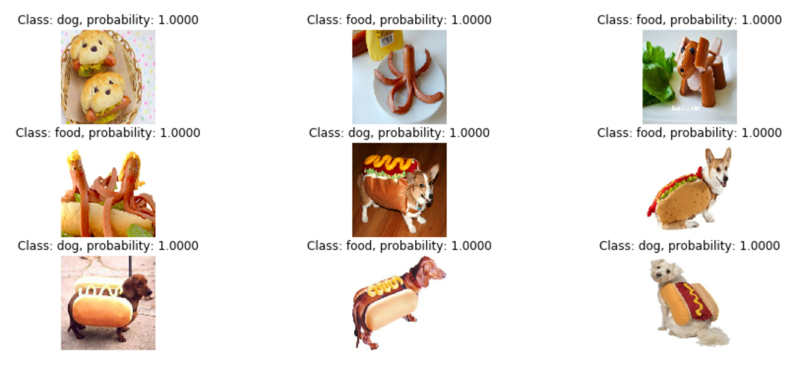
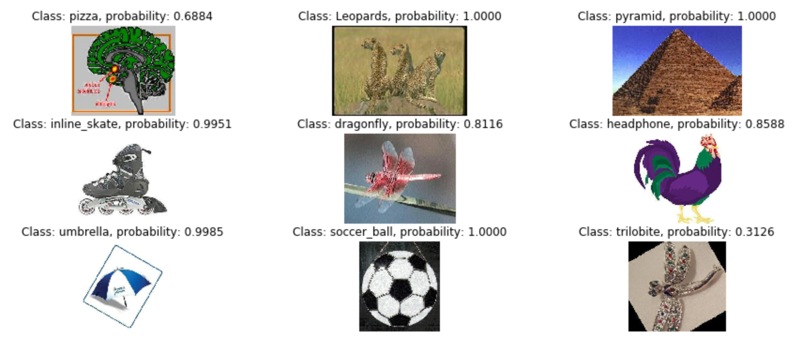

The architecture of AlexNet, as shown in the original paper.
Deep convolutional networks can be both simple and quite convoluted. However, in our final project of the semester, we make attempts to demystify what goes into a convolutional network and try to understand how it works. In order to do this, we utilized TensorFlow and AlexNet, as implemented here in this repository.
If you would like to see our (George and Yan's) repository, then please refer to the link here. We forked and adapted the code from kratzert's repository based on our needs and requirements. Overall, this was a fun, quick project to do in order to understand how convolutional networks function!
Yan led the research and drafting process for this project report; the configuration of cloned code, creation of supplementary code, and training of the CNN were George's primary responsibilities. Facebook messenger was used to facilitate a mutual understanding of AlexNet and the cloned repository, while Git served as a tool to work on the same codebase in parallel. This report is a synthesis of our findings and understanding of the material.
Additional roles that we undertook throughout this project will be discussed throughout the report.
Deep convolutional neural networks (CNNs) simulate neuronal-based learning through the use of a multi-layered processing architecture. CNNs have grown in popularity thanks to their proficiency in tasks that have often proved challenging to solve by computer, such as object recognition and complex scene description. For this project, we used AlexNet, an image recognition CNN originally created in 2012. Alexnet contains eight learning layers: five convolutional layers and three "fully-connected" layers. See the above image to understand how data
is processed throuhgout the system. CNNs share weights in convolutional layers, which means that the same filter is used in each field and improves performance overall.
All of the processes should ideally happen on the GPU, as it is faster, but in some cases will need to be done on the CPU depending on the OS of the system being used
(in our case, our processing happened on the CPU). If the dataset is small enough, the time it takes to run on the CPU is negilible. However, bigger datasets will require more machinepower.
AlexNet in particular is supervised deep learning, meaning that we are providing the network a training dataset, a validation dataset, and a testing dataset (70-15-15 breakup, if possible).
The network takes the training dataset, processes it, and validates it against the validation set. The testing set should be images that the network has never seen before in order to properly test
the network. For our particular setup, we have a pretrained network that already has weights associated with it. We will now discuss finetuning AlexNet to our new datasets from the Professor (dog vs hotdog)
and from ImageNet. Note that, in order to observe the tuned results of this neural network, training information must first be generated; the training data used for the tuned implementations discussed has not been included in this repository due to size limitations. This can be done by running hd_tuner.py and ob_tuner.py, respectively.
Finetuning AlexNet, thankfully, was not a challenge but did require some work in modifying the code to suit our needs, especially with the first set of images being only 58 images total.
The small batch required us to consider parts of the code as George attempted to run parts of it. We had to adjust the learning params in finetune.py. We adjusted our batch_size
as 8 to avoid hitting division by zero errors. We also took away one of the train_layers that we wanted to look at and focused primarily on the last two, fc8 and fc7. We kept the rest of the code the same
and then made our .txt files to include the paths to our training and validation images, respectively. We classified dogs as 0s and hot dogs (and food related items) as 1s. There were several images
provided to us where the dogs were also in hot dog costumes.
Our results were tested on 9 images! Not so surprisingly, AlexNet was able to identify the images accurately for 5/9 images (3 true positives, 2 false positives), as seen below, where food is labelled appropriately and dogs are labelled appropriately. The algorithm failed to notice the Corgi in the hot dog costume as well as the Dachscund in the hot dog costume. It also miscategorized the very left image as a dog, when it's actually hot dogs. For the most part, though, the algorithm did a good job in identifying the images, likely because of the fact that AlexNet was already pretrained on images of dogs and hotdogs, but it was likely just introduced to dogs in costumes. Perhaps with a larger dataset to train AlexNet on, we could arrive to be more reliant results, but a success rate of a little over 50% is not bad for the given dataset.
 After finetuning AlexNet to our dog/hotdog dataset, we were required to train the neural network on another set of data. We chose the dataset called Caltech101, which is linked below in the results (if you'd like
to learn more about the contents of the dataset). This was significantly smaller than the dataset that we were linked to (CIFAR) and, given our computational power and prowess in writing scripts that would automate the .txt
file creation, it was in our favor to pick a smaller dataset. Nonetheless, Caltech 101 consists of 101 classes with approximately 50 or so images per class, at variable resolution. Some classes have more images than others, airplanes,
for example, have over 700. This dataset was created by Fei Fei Li. Furthermore, CIFAR was stored in a format that was unfamiliar with both of us and would require more time than we could afford in order to tackle the problem. Combined with
the breadth of the dataset and the datatype, it was better to go with Caltech 101. As the algorithm that we are using requires a .txt file, George wrote a script that would automate the process and would give us two files to work with in the end
with the proper labels. What this entails is parsing through the files to find the filepaths and to match the images accordingly based on the parsing to have a file containing training images and validation images.
See below for the script that George wrote to obtain the path to the file and the appropriate labels.
import os
def list_files(dir):
r = []
i = 0
dir_list = [x[0] for x in os.walk(dir)]
dir_list = sorted(dir_list, key=str.lower)
dir_list.pop(0)
for subdir in dir_list:
folder_list = []
files = os.walk(subdir).next()[2]
if (len(files) > 0):
for file in files:
folder_list.append(subdir + '/' + file + ' ' + str(i))
i += 1
r.append(folder_list)
return r
# Create master file list
master_list = list_files('data/101_obj')
# Create sublists
tr_list = []
va_list = []
te_list = []
for sublist in master_list:
# Training List
tr_portion = sublist[:int(len(sublist)*.7)]
for item in tr_portion:
tr_list.append(item)
# Validation List
va_portion = sublist[int(len(sublist)*.7):int(len(sublist)*.85)]
for item in va_portion:
va_list.append(item)
for sublist in master_list:
# Test List
for item in sublist:
if not item in tr_list and not item in va_list:
te_list.append(item)
# Print file lists
# print master_list
# print tr_list
# print va_list
# Create new text files
tr_text = open("@tr_list.txt","w+")
va_text = open("@va_list.txt","w+")
te_text = open("@te_list.txt","w+")
# Write to file lists
for item in tr_list:
tr_text.write('%s\n' % (item))
for item in va_list:
va_text.write('%s\n' % (item))
for item in te_list:
te_text.write('%s\n' % (item))
# Close text files
tr_text.close()
va_text.close()
te_text.close()Like before, there was an observation of increasing validation accuracy as AlexNet is trained on the given dataset that was provided. AlexNet may or may not have already been trained on these images, but it would be interesting to see what comes out of it after splitting the files in relatively the same distribution as we did for the hot dogs vs dogs.
And check out those results! These images were randomly picked from the testing pool and evaluated. We can see that AlexNet had 6/9, or 2/3. There were six true positives and 3 false positives. That is incredibly good in terms of the return rate, which is to be expected from AlexNet! Furthermore, it's interesting that the first image in the first row was determined as pizza with half confidence. This is likely due to the red lining and the greenness of the image, along with the shape of the brain closely resembling a triangular slice of pizza. The last image in the final row is a silver dragonfly pendant, and the fossil that it refers to looks incredibly like it (plus, 30% confidence also indicates that the algorithm was also unclear). Overall, the algorithm did a phenomenal job with identifying the objects in the images.
For a final project, this was interesting! We were able to properly problem solve our way through understanding and using the repository that was provided to us. We were also able to effectively use git and GitHub as a means of collaboration and used Facebook in order to communicate when we made changes so that we could pull said changes down from GitHub. For the future, it would be nice to dive deeper into convlutional networks and in understanding the algorithm in-depth, and perhaps that can be done through an artifiical intelligence class. Nonetheless, it is quite impressive that AlexNet was able to analyze images the way that it did and with fairly impressive accuracy.